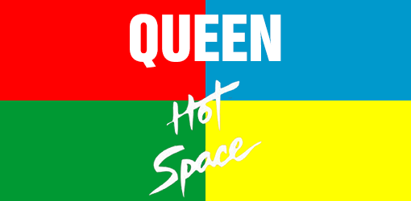
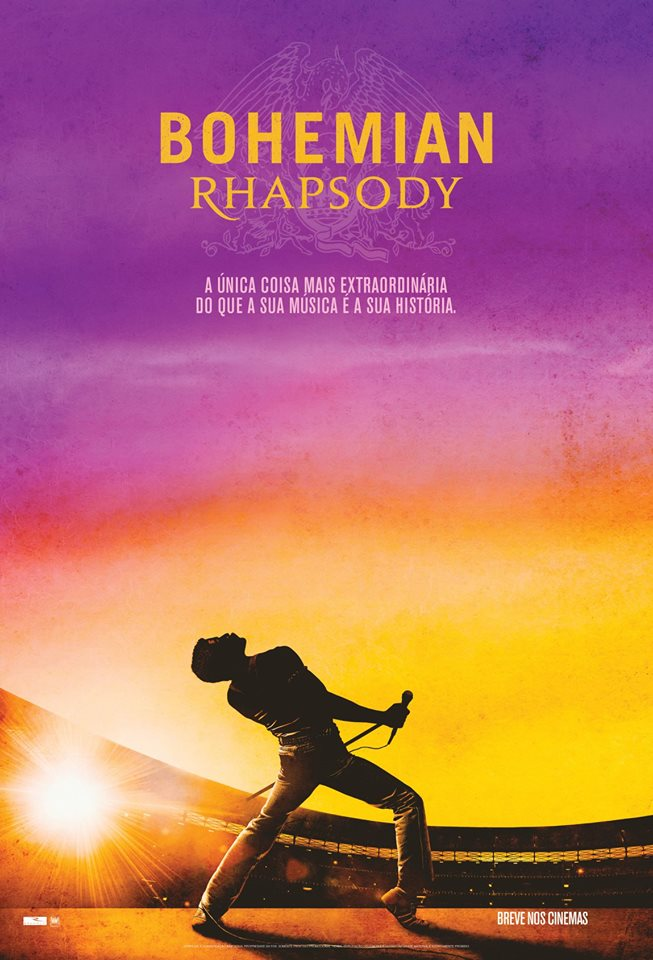

Escolha Um Músico:

O Filme:

Bohemian Rhapsody
Traz a Cinebiografia da banda, contando sua trajetória musical, que se inicia em Londres e contagia o mundo.
Freddie Mercury, Brian May, Roger Taylor e John Deacon formam a banda de rock Queen em 1970.
Quando o estilo de vida agitado de Mercury começa a sair de controle, o grupo precisa encontrar
uma forma de lidar com o sucesso e os excessos de Freddie.
É notável a fidelidade desta obra a real história da banda, passando por momentos marcantes do grupo,
foi recompensada com 4 Oscars e 1 indicação.
Powered by
© 2020 Copyright - Queen Fã inc
Suporte
Chat
FAQ
(+55) 11 96541-1173